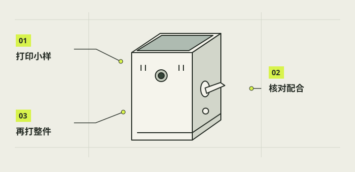

三维打印与小样试配
打印前先选择与手里硬件一致的模型，再检查切片和小样。本项目使用拓竹X2D；现有PETG Matte、0.4毫米喷嘴的参数和时间只是已核对的项目示例，不是以后所有材料的默认设置。切片通过能排除一部分数字问题，真正的卡紧、桥接和强度仍要靠印件试配。

本章完成目标
- 选对当前组合和需要补印的零件
- 在开印前发现比例、朝向、支撑与薄壁问题
- 通过小样试配确定卡扣和拨杆档位
开始前准备好
- 第12章已确定真实零件尺寸与外壳组合
- 已核对打印机为拓竹X2D及实际装上的喷嘴
- 本次所用材料由制作者明确选定，并取得该材料的切片配置
- STL
- 单件三角网格，通常不包含整盘排版和打印参数。
- 3MF
- 可保存多对象、摆位及部分切片配置的工程文件。
- 切片
- 把三维模型换成逐层刀路的数字准备步骤，不等同于实际打印。
按组合挑模型，不整盘盲印
从当前完整结构资料的零件与复用清单开始：V27主壳和完好共用件可继续用，V28更新载架与长销，V29的05／06镜头框必须成对使用，A_down为已能正常下拨的基线。整合3MF有50对象、三盘，其中外柄B／C、垫片和拆卸工具不是同时装机。新48×40×20电池另取V31两件，充电口方向修正用G2，不把它们误认成旧总包已自动更新。
注意 / 同名工作3MF可能被重存；核对入口及版本证据，不只看文件名。
确认材料后再套用切片示例
已核对的示例是X2D、0.4毫米喷嘴、PETG Matte、完整模型0.16毫米层高、四道墙和原支撑设置；V30拨杆校准件另用0.12毫米层高以保留细小厚度差。打开工程后核对100%比例、对象朝向、打印板、支撑和外沿，不让软件自动重摆覆盖来源。若改用其他材料，先做温度、附着、收缩和卡扣弹性的小样校准，再决定整件参数。
注意 / 不能把PETG样例温度或尺寸公差直接移植到另一种材料。
逐层看薄壁、孔和支撑
放大查看镜头框固定耳、Pi载架孔座、长锁销卡肩、拨杆圆盘方孔、底盖扣及充电口线槽的刀路。V31电池盒局部侧壁数字采样薄到约0.8毫米，底边有意开口，尤其要看实际墙线是否连续；N3遮光斗的小轴、弹舌和夹爪也不能被自动支撑掩盖。切片无警告只说明软件找到刀路，不证明桥接成功或可拆支撑而不损件。
注意 / 细小卡肩、弹舌和操作柄是正式结构，取件时不能当支撑剪掉。
先印最能暴露风险的小件
优先试固定鞋与锁键、Pi卡销、底盖扣、镜头框局部和实际电池盒需要的薄壁，而非一次重印主壳。V30有F1至F3圆盘和T1至T3卡环，先保持旧卡环逐个试F，定下F后再独立试T，每组每次只装一件；最厚档不一定最好。G2充电托架先与现有04底盖干装，V31盒体先与实物电池、线根、面盖干装，未通过前不要上胶。
注意 / 有阻力先核对毛边和方向，不用主壳、屏幕或电池作撬动支点。
把数字结论和实物结论分开记
打印后先检查翘边、层裂、桥接垂丝、孔径和支撑拆除造成的伤痕，再按第14章顺序轻试装。记录卡件是否能到位又能拆出，拨杆能否自然回位，底盖能否不压线闭合。只把实际做过的项目写成实物通过；网格闭合、切片重开、估计时长与材料重量只能写为数字检查。若材料或打印批次变化，关键配合重新小样验证。
注意 / 不要为了让有问题的件勉强装入而削掉止挡或拉断排线。
完成后，逐项打勾。
勾选帮助你记录进度，不代表项目替你完成了实机验收。
遇到问题，从这里排查。
卡环不同档印出来手感相同
核对V30是否使用0.12毫米层高和正确文件，再量实物厚度。
薄壁能切片却一取支撑就断
停用该件，记录断裂位置与刀路，回到结构与材料样件重新评估。
本项目的实际进展
- 10月28日完整3MF的50对象分三盘、网格与切片重开通过；这些记录不代表全盘已打印。
- V31原始切片交付有独立证据，后来同名工作3MF被重存且失去内嵌G-code；公开前需重新核对要发的确切文件。
资料与核对依据
- 完整模型使用说明 ↗
- 完整模型安装与打印说明 ↗
- E结构最新交接与V31证据 · camera-project/E-结构/handoff.md
资料核对日期：2026-10-30。不同硬件、系统版本和材料需要重新验证。